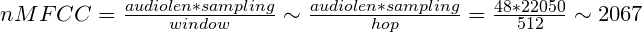

Understanding the output of mfcc
from librosa.feature import mfcc from librosa.core import load def extract_mfcc(sound): data, frame = load(sound) return mfcc(data, frame) mfcc = extract_mfcc("sound.wav")
I would like to get the MFCC of the following sound.wav file which is 48 seconds long.
I understand that the data * frame = length of audio.
But when I compute the MFCC as shown above and get its shape, this is the
result: (20, 2086)
What do those numbers represent? How can I calculate the time of the audio just by its MFCC?
I'm trying to calculate the average MFCC per ms of audio.
Any help is appreciated! Thank you :)
Answer
That's because mel-frequency cepstral coefficients are computed over a window, i.e. number of samples. Sound is wave and one cannot derive any features by taking a single sample (number), hence the window.
To compute MFCC, fast Fourier transform (FFT) is used and that exactly requires that length of a window is provided. If you check librosa documentation for mfcc you won't find this as an explicit parameter. That's because it's implicit, specifically:
- length of the FFT window: 2048
- number of samples between successive frames: 512
They are passed as **kwargs and defined here.
If you now take into account sampling frequency of your audio and these numbers. you will arrive at the final result you have provided.
Since the default sampling rate for librosa is 22050, audio length is 48s and window equals 512, here's what follows:

The number is not exactly 2086, as:
- Your audio length isn't exacatly 48 seconds
- The actual window length is 2048, with 512 hop. That means you will "loose" a few frames at the end.